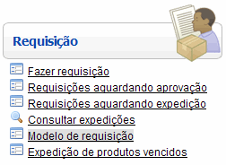

Editar Modelo de Requisição [ Voltar ]
Utilize este
formulário para criar e editar modelos de requisição.
O formulário
"Editar modelo de requisição" se
encontra dentro do menu "Requisição".

O sistema abrirá a seguinte tela:
Criar
modelo de requisição
Editar
modelo de requisição
Criar
modelo de requisição
1º Passo:
defina os seguintes detalhes do modelo de requisição que deseja criar:
- Nome. Insira aqui uma designação para
o modelo.
- Permitir alteração de quantidades.
Marque esta opção se desejar permitir que o usuário altere as
quantidades definidas para o modelo.
- Observação: esta opção somente é válida quando a
requisição utilizar kits.
- Destino / Origem.
Você pode especificar aqui os locais de origem e destino para esta
requisição. Se este campo for deixado em branco, o usuário poderá
selecionar qualquer local de destino (o local de origem deverá ser
sempre o Centro de Distribuição).
- Descrição.
Se desejar, deposite neste campo observações referentes a este modelo.
- Usuários.
Selecione aqui os usuários que poderão utilizar este modelo. Para
selecionar mais de usuário, pressione a tecla "Ctrl" enquanto seleciona
os usuários desejados. Se este campo for deixado em branco, este modelo
ficará disponível para todos os usuários.
2°
Passo: clique no botão  para
salvar as informações inseridas. O sistema irá gerar
automaticamente um número para o modelo. Na
parte inferior da tela, uma grade será exibida para a inclusão dos
produtos que constarão neste modelo de requisição. para
salvar as informações inseridas. O sistema irá gerar
automaticamente um número para o modelo. Na
parte inferior da tela, uma grade será exibida para a inclusão dos
produtos que constarão neste modelo de requisição.
3º
Passo: especifique os itens que deverão compor este modelo, além das
respectivas unidades, quantidade e origem. Pressione
"Enter" para ir de um campo a outro e para adicionar novos itens.
4°
Passo: clique no botão para
salvar o modelo. O sist
Editar
modelo de requisição
1º Passo: abra
a requisição que deseja aprovar. Clique no botão  [Abrir] para abrir a requisição. A seguinte tela será exibida:
[Abrir] para abrir a requisição. A seguinte tela será exibida:
2º
Passo: confira os dados da requisição.
A tela conterá todos os detalhes da requisição, incluindo "Local de
origem", "Destinatário", "Prioridade", produtos requisitos e
quantidades. Confirme a quantidade aprovada (por padrão é a quantidade
requisitada, mas pode ser alterada). ,
3º
Passo: aprove a requisição. Após revisar todos os produtos e as
quantidades para aprovação, aprove-a clicando no
botão  . .
Ir
para o topo da página
|